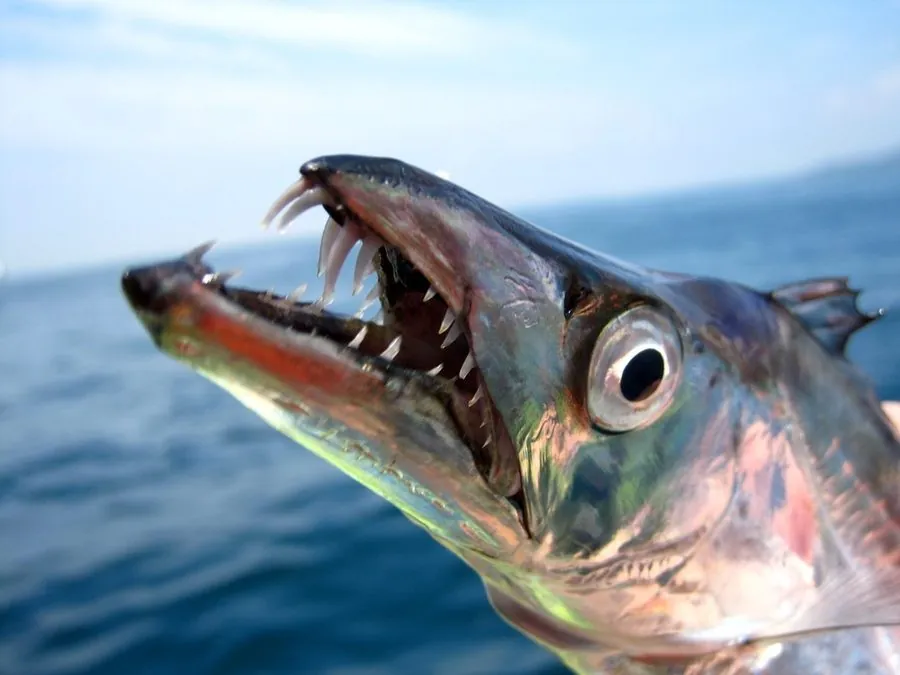

鱼类 · 动物界
带鱼 Trichiurus lepturus

体形侧扁如带、银光闪闪的近海鱼类，牙齿锋利、性情凶猛，是中国产量最大的海洋经济鱼类之一，也是常见的家常海产。
- 分类
- 门脊索动物门纲硬骨鱼纲目鲈形目科带鱼科属带鱼属
- 栖息环境
- 大陆架泥沙底质海域，水深 10–200 m，昼伏夜出
- 地理分布
- 全球热带、亚热带和温带近海，中国黄海、东海和南海均产
- 保护级别
- 暂无评估；中国未列入国家重点保护野生动物名录（重要海洋经济鱼类）
物种志
带鱼体延长、侧扁如带，尾部细长呈鞭状。头长，口大，上下颌长着尖锐的牙齿。体表银白，没有鳞片，只有一层银白色的薄膜覆盖，在阳光下闪闪发光；背鳍很长，从头部一直延伸到尾部。成鱼体长一般 60–120 cm，最大可超过 2 m。
带鱼分布于全球热带、亚热带和温带的近海海域，中国黄海、东海和南海均有分布。它栖息于大陆架泥沙底质，水深 10–200 m，具有昼夜垂直迁移的习性：白天待在底层，夜间上浮到中层捕食。带鱼是肉食性鱼类，捕食小鱼、虾和乌贼，性情凶猛，牙齿锋利，被捕获时容易咬人。繁殖期在春夏季，卵为浮性，随水流孵化。带鱼是中国产量最高的海洋经济鱼类之一，因长期高强度捕捞，渔获个体明显变小，资源出现衰退迹象。目前它没有IUCN 的正式评估，中国未将其列入国家重点保护野生动物名录。
形态与习性
- 食性肉食性，捕食小鱼、虾和乌贼
- 体长一般 60–120 cm，最大可超过 2 m
- 体重常见 200–500 g，最大可超过 2 kg
- 垂直迁移白天在底层，夜间上浮到中层捕食
- 体表没有鳞片，覆盖一层银白色薄膜，闪闪发光
- 繁殖春夏季产卵，卵为浮性
趣味知识
- 带鱼体表没有鳞片，只有一层银白色的膜，在阳光下闪闪发光。
- 它白天待在海底，夜间上浮到中层捕食，具有昼夜垂直迁移习性。
- 带鱼牙齿锋利、性情凶猛，是中国产量最大的海洋经济鱼类之一。